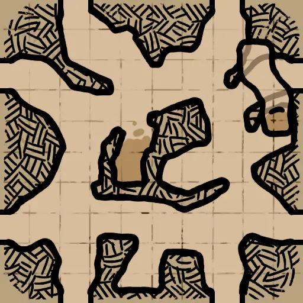
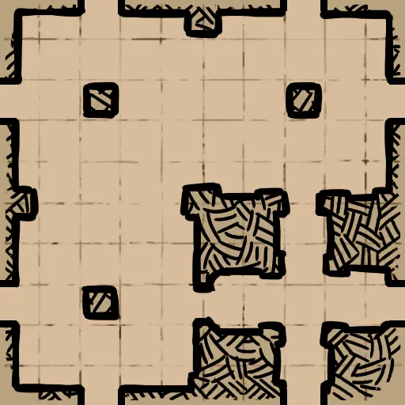
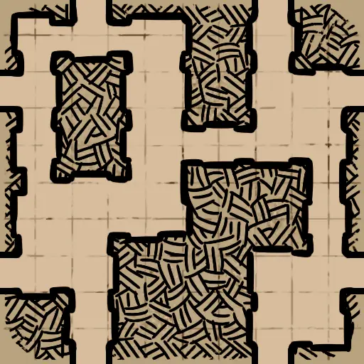
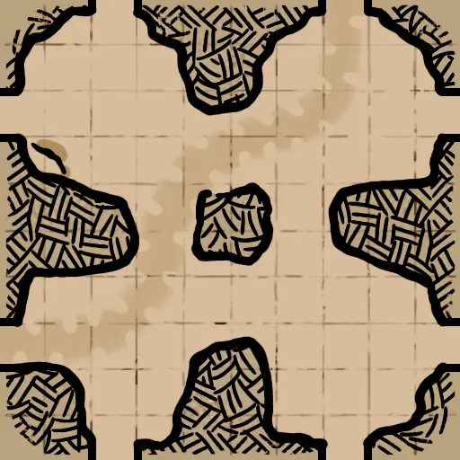

哥布林洞穴1层
哥布林迷宫 A (Goblin_Maze)CaveMaze_HR_D.json
CaveMaze.png | 找到 6 个位置 | 自动范围: ±1600

哥布林迷宫 B (Goblin_Maze_B)CaveMaze_Center_02_HR_D.json
GoblinJail_Center_02.png | 找到 5 个位置 | 自动范围: ±1600

岩洞湖 B (Cavern_Lake_B)CavernLake_03_HR_D.json
CavernLake_03.png | 找到 1 个位置 | 自动范围: ±1600

哥布林小镇 B (Goblin_Town_B)CaveTown_02_D.json
CaveTown_02.png | 找到 1 个位置 | 自动范围: ±1600

洞穴祭坛 B (Cave_Altar_B)Cave_Altar_02_HR_D.json
Cave_Altar_02.png | 找到 2 个位置 | 自动范围: ±1600

洞穴祭坛 A (Cave_Altar)Cave_Altar_Center_HR_D.json
Cave_Altar_Center.png | 找到 3 个位置 | 自动范围: ±1600

哥布林匪窝 (Goblin_Bandits)Cave_BanditCamp_Center_HR_D.json
Cave_BanditCamp_Center.png | 找到 2 个位置 | 自动范围: ±1600

鼹鼠隧道 (MoleTunnel)Cave_MoleTunnel_HR_D.json
Cave_MoleTunnel.png | 找到 1 个位置 | 自动范围: ±1600

蛛网巢穴 (SpiderNest)Cave_SpiderNest_02_D.json
Cave_SpiderNest_02.png | 找到 1 个位置 | 自动范围: ±1600

洞穴墓葬 (Cave_Tombs)Cave_Tomb_Center_HR_D.json
Cave_Tomb_Center.png | 找到 3 个位置 | 自动范围: ±1600

峡谷 A (Valley_A)Cave_Valley_HR_D.json
Cave_Valley.png | 找到 1 个位置 | 自动范围: ±1600

峡谷 B (Valley_B)Cave_Valley_02_HR_D.json
Cave_Valley_02.png | 找到 3 个位置 | 自动范围: ±1600

哥布林监狱 A (GoblinPrisons_A)GoblinJail_Center_HR_D.json
GoblinJail_Center.png | 找到 3 个位置 | 自动范围: ±1600

哥布林监狱 B (GoblinPrisons_B)GoblinJail_Center_02_HR_D.json
GoblinJail_Center_02.png | 找到 3 个位置 | 自动范围: ±1600
哥布林矿井 (Goblin_Mine)GoblinMineCenter_01_HR_D.json
GoblinMineCenter_01.png | 找到 1 个位置 | 自动范围: ±1600

洞穴藏身处 A (CaveHideout_A)HideoutCave_Center_HR_D.json
HideoutCave_Center.png | 找到 4 个位置 | 自动范围: ±1600

石坟 A (Stone_Graves_A)StoneGrave_Center_HR_D.json
StoneGrave_Center.png | 找到 4 个位置 | 自动范围: ±1600

石坟 B (Stone_Graves_B)StoneGrave_Center_02_HR_D.json
StoneGrave_Center_02.png | 找到 1 个位置 | 自动范围: ±1600

岩洞湖 A (Cavern_Lake_A)CavernLake_02_HR_D.json
CavernLake_02.png | 找到 1 个位置 | 自动范围: ±1600

哥布林小镇 A (Goblin_Town_A)CaveTown_D.json
CaveTown.png | 找到 1 个位置 | 自动范围: ±1600

哥布林宿舍 (Goblin_Rooms)Cave_Rooms_HR_D.json
Cave_Rooms.png | 找到 14 个位置 | 自动范围: ±1600

洞穴隧道 (CaveTunnels)GoblinCaveCorner_01_HR_D.json
GoblinCaveCorner_01.png | 找到 1 个位置 | 自动范围: ±1600

洞穴藏身处 B (CaveHideout_B)HideoutCave_02_HR_D.json
HideoutCave_02.png | 找到 2 个位置 | 自动范围: ±1600

蜘蛛洞 (SpiderCave)SpiderCave_02_HR_D.json
SpiderCave_02.png | 找到 5 个位置 | 自动范围: ±1600

废墟2层地牢
祭坛室 (AltarRoom)Crypt_AltarRoomAB_HR_D.json
AltarRoomAB.png | 找到 2 个位置 | 自动范围: ±1600

巨型环厅 (Wheel)CenterTower_HR_D.json
CenterTower.png | 找到 2 个位置 | 自动范围: ±6400

悬崖 (Cliffs)CliffBridge_HR_D.json
CliffBridge.png | 找到 4 个位置 | 自动范围: ±1600

门控房间 (Gated_Rooms)ComplexHall_HR_D.json
ComplexHall.png | 找到 1 个位置 | 自动范围: ±1600

幽鬼巢穴 (Wraith_Lair)EightToOne_02_D.json
EightToOne_02.png | 找到 1 个位置 | 自动范围: ±1600

四方房 (Four_Rooms)Crypt_FourRooms_D.json
Crypt_FourRooms.png | 找到 1 个位置 | 自动范围: ±1600

中心祭坛 (Center_Altar)FourWayConnect_HR_D.json
FourWayConnect.png | 找到 1 个位置 | 自动范围: ±1600

大长廊 (GreatWalkway)Crypt_GreatWalkway_HR_D.json
Crypt_GreatWalkway.png | 找到 3 个位置 | 自动范围: ±1600

断桥 (Broken_Bridge)Crypt_LargeRoomPit_HR_D.json
Crypt_LargeRoomPit.png | 找到 2 个位置 | 自动范围: ±1600

无光密室 (LightlessChamber_01)Crypt_LightlessChamber_01_D.json
GoblinCaveCorner_01.png | 找到 2 个位置 | 自动范围: ±1600
失心长廊 (MadCorridors)Crypt_MadCorridors_D.json
未找到 | 找到 1 个位置 | 自动范围: ±1600
未找到
迷宫 (Maze)Maze_HR_D.json
Maze.png | 找到 5 个位置 | 自动范围: ±1600

迷你环厅 (Mini_Wheel)TheMiniWheel_HR_D.json
TheMiniWheel.png | 找到 5 个位置 | 自动范围: ±1600

角斗坑 (Pit)ThePit_HR_D.json
ThePit.png | 找到 5 个位置 | 自动范围: ±1600

陵墓 (Tombs)Tomb_Center_HR_D.json
Tomb_Center.png | 找到 2 个位置 | 自动范围: ±1600

宝库大厅 (Vault)Crypt_Vault_HR_D.json
Crypt_Vault.png | 找到 4 个位置 | 自动范围: ±1600

军械库 (Armory)Armory_HR_D.json
Armory.png | 找到 3 个位置 | 自动范围: ±1600

军营 (Barracks)Barracks_HR_D.json
Barracks.png | 找到 2 个位置 | 自动范围: ±1600

地下墓穴 (Catacomb)Catacomb_HR_D.json
Catacomb.png | 找到 2 个位置 | 自动范围: ±1600

蓄水池 (Cistern)Cistern_HR_D.json
Cistern.png | 找到 2 个位置 | 自动范围: ±1600

陷阱走廊 B (Trap_Hall_B)Connector_Trap_02_HR_D.json
Connector_Trap_02.png | 找到 1 个位置 | 自动范围: ±1600

黑暗祭司 (Dark_Priests)CorridorofDarkPriests_HR_D.json
CorridorofDarkPriests.png | 找到 5 个位置 | 自动范围: ±1600

十字路口 (Cross_Road)CrossRoad_HR_D.json
CrossRoad.png | 找到 2 个位置 | 自动范围: ±1600

死亡厅堂 (Death_Hall)DeathHall_HR_D.json
DeathHall.png | 找到 1 个位置 | 自动范围: ±1600

岗哨 (Guard_Posts)GuardPost_HR_D.json
GuardPost.png | 找到 1 个位置 | 自动范围: ±1600

大祭司 (High_Priests)HighPriestOssuary_HR_D.json
HighPriestOssuary.png | 找到 1 个位置 | 自动范围: ±1600

金字塔 (Pyramid)LowPyramid_HR_D.json
LowPyramid.png | 找到 2 个位置 | 自动范围: ±1600

旧陵墓 (Old_Tomb)OldTomb_D.json
OldTomb.png | 找到 1 个位置 | 自动范围: ±1600

环廊 (Circular)OssuaryEdge_HR_D.json
OssuaryEdge.png | 找到 2 个位置 | 自动范围: ±1600

圣所 (Sanctum)Sanctum_D.json
Sanctum.png | 找到 3 个位置 | 自动范围: ±1600

下水道 (Sewers)Sewers_HR_D.json
Sewers.png | 找到 3 个位置 | 自动范围: ±1600

长桥 (Long_Bridge)SingleLogBridge_HR_D.json
SingleLogBridge.png | 找到 1 个位置 | 自动范围: ±1600

藏骨堂 (Skeleton_Rooms)SkeletonPit_HR_D.json
SkeletonPit.png | 找到 3 个位置 | 自动范围: ±1600

储藏室 (Storeroom)Storeroom_HR_D.json
Storeroom.png | 找到 1 个位置 | 自动范围: ±1600

沼泽 (Swamp)Swamp_HR_D.json
Swamp.png | 找到 2 个位置 | 自动范围: ±1600

哥布林洞穴2层
砧火哨站 (AnvilOutpost)Firedeep_AnvilOutpost_D.json
AnvilOutpost.png | 找到 1 个位置 | 自动范围: ±1600

烈火隧道 (BlazeTunnel)Firedeep_BlazeTunnel_D.json
BlazeTunnel.png | 找到 2 个位置 | 自动范围: ±1600

断石桥 (BrokenStonebridge)Firedeep_BrokenStonebridge_D.json
BrokenStonebridge.png | 找到 2 个位置 | 自动范围: ±1600

焚庭 (BurningCourt)Firedeep_BurningCourt_D.json
BurningCourt.png | 找到 2 个位置 | 自动范围: ±1600

崩陷矿场 (CollaspedDigSite)Firedeep_CollapsedDigSite_D.json
CollapsedDigSite.png | 找到 2 个位置 | 自动范围: ±1600

熔岩交叉口 (LavaCrossway)Firedeep_LavaCrossway_D.json
LavaCrossway.png | 找到 2 个位置 | 自动范围: ±1600

岩浆瀑布 (MagmaFalls)Firedeep_MagmaFalls_D.json
Magmafalls.png | 找到 2 个位置 | 自动范围: ±1600

采矿通道 (MiningPassage)Firedeep_MiningPassage_D.json
MiningPassage.png | 找到 2 个位置 | 自动范围: ±1600

熔坑 (MoltenPit)Firedeep_MoltenPit_D.json
MoltenPit.png | 找到 2 个位置 | 自动范围: ±1600

冰图2层
寒渊之流 (IceAbyss_DeepFlow)IceAbyss_DeepFlow_HR_D.json
IceAbyss_DeepFlow.png | 找到 4 个位置 | 自动范围: ±1600

冰川獠牙 (IceAbyss_AbyssTooth)IceAbyss_AbyssTooth_D.json
IceAbyss_AbyssTooth.png | 找到 4 个位置 | 自动范围: ±1600

停尸房 (CharnelHouse)IceAbyss_CharnelHouse_HR_D.json
IceAbyss_CharnelHouse.png | 找到 2 个位置 | 自动范围: ±1600

伪王座 (IceAbyss_FalseThrone)IceAbyss_FalseThrone_D.json
IceAbyss_FalseThrone.png | 找到 3 个位置 | 自动范围: ±1600

霜纹柱廊 (IceAbyss_FrostwovenPillars)IceAbyss_FrostwovenPillars_HR_D.json
IceAbyss_FrostwovenPillars.png | 找到 8 个位置 | 自动范围: ±1600

霜锢堡垒 (IceAbyss_FrozenHold)IceAbyss_FrozenHold_D.json
IceAbyss_FrozenHold.png | 找到 5 个位置 | 自动范围: ±1600

冰峡关 (IceAbyss_Glacivia)IceAbyss_Glacivia_D.json
IceAbyss_Glacivia.png | 找到 4 个位置 | 自动范围: ±1600

犬啸谷 (IceAbyss_HoundVale)IceAbyss_HoundVale_D.json
IceAbyss_HoundVale.png | 找到 6 个位置 | 自动范围: ±1600

冰迷宫 (IceAbyss_IceMaze)IceAbyss_IceMaze_D.json
IceAbyss_IceMaze.png | 找到 10 个位置 | 自动范围: ±1600

恶灵仪式室 (IceAbyss_ImpRitualRooms)IceAbyss_ImpRitualRooms_HR_D.json
IceAbyss_ImpRitualRooms.png | 找到 6 个位置 | 自动范围: ±1600

巨构体 (IceAbyss_Monoliths)IceAbyss_Monoliths_HR_D.json
IceAbyss_Monoliths.png | 找到 3 个位置 | 自动范围: ±1600

石柱廊 (IceAbyss_Pillars)IceAbyss_Pillars_HR_D.json
IceAbyss_Pillars.png | 找到 2 个位置 | 自动范围: ±1600

倒金字塔 (IceAbyss_ReversedPyramid)IceAbyss_ReversedPyramid_HR_D.json
IceAbyss_ReversedPyramid.png | 找到 4 个位置 | 自动范围: ±1600

浅谷 (IceAbyss_ShallowValley)IceAbyss_ShallowValley_HR_D.json
IceAbyss_ShallowValley.png | 找到 2 个位置 | 自动范围: ±1600

沉墟柱廊 (IceAbyss_SinkingPillars)IceAbyss_SinkingPillars_HR_D.json
IceAbyss_SinkingPillars.png | 找到 4 个位置 | 自动范围: ±1600

阶梯山丘 (IceAbyss_StaircaseHill)IceAbyss_StaircaseHill_HR_D.json
IceAbyss_StaircaseHill.png | 找到 2 个位置 | 自动范围: ±1600

冰龙巢穴 (IceAbyss_WyvernLair)IceAbyss_WyvernLair_HR_D.json
IceAbyss_WyvernLair.png | 找到 8 个位置 | 自动范围: ±6400

冰图1层
圣坛 (IceCave_Altar)IceCave_Altar_HR_D.json
IceCave_Altar.png | 找到 2 个位置 | 自动范围: ±1600

拒马阵地 (IceCave_Barricade)IceCave_Barricade_HR_D.json
IceCave_Barricade.png | 找到 1 个位置 | 自动范围: ±1600

冰桥 (IceCave_Bridge)IceCave_Bridge_D.json
IceCave_Bridge.png | 找到 1 个位置 | 自动范围: ±1600

冰港 (IceCave_Cabin)IceCave_Cabin_Raft_HR_D.json
IceCave_Cabin_Raft.png | 找到 1 个位置 | 自动范围: ±1600

洞穴通道 (IceCave_CavePathway)IceCave_CavePathway_HR_D.json
IceCave_CavePathway.png | 找到 2 个位置 | 自动范围: ±1600

洞穴沼泽 (IceCave_CaveSwamp)IceCave_CaveSwamp_HR_D.json
IceCave_CaveSwamp.png | 找到 1 个位置 | 自动范围: ±1600

十字路口 (IceCave_CrossRoad)IceCave_CrossRoad_HR_D.json
IceCave_CrossRoad.png | 找到 4 个位置 | 自动范围: ±1600

双子洞穴 (IceCave_DualCaverns)IceCave_DualCaverns_D.json
IceCave_DualCaverns.png | 找到 1 个位置 | 自动范围: ±1600

四方路 (IceCave_FourRoute)IceCave_FourRoute_HR_D.json
IceCave_FourRoute.png | 找到 2 个位置 | 自动范围: ±1600

冻湖 (IceCave_FrozenLake)IceCave_FrozenLake_D.json
IceCave_FrozenLake.png | 找到 4 个位置 | 自动范围: ±1600

岗哨 (IceCave_Guardpost)IceCave_Guardpost_D.json
GuardPost.png | 找到 1 个位置 | 自动范围: ±1600
蜂巢 (IceCave_Hive)IceCave_Hive_03_HR_D.json
IceCave_Hive_03.png | 找到 1 个位置 | 自动范围: ±1600

小屋 A (IceCave_Hut_A)IceCave_Hut_01_HR_D.json
IceCave_Hut_01.png | 找到 4 个位置 | 自动范围: ±1600

小屋 B (IceCave_Hut_B)IceCave_Hut_02_HR_D.json
IceCave_Hut_02.png | 找到 4 个位置 | 自动范围: ±1600

小屋 C (IceCave_Hut_C)IceCave_Hut_03_HR_D.json
IceCave_Hut_03.png | 找到 3 个位置 | 自动范围: ±1600

冰柱洞 (IceCave_IcicleCave)IceCave_IcicleCave_HR_D.json
IceCave_IcicleCave.png | 找到 2 个位置 | 自动范围: ±1600

迷宫 (IceCave_Maze)IceCave_Maze_HR_D.json
IceCave_Maze.png | 找到 5 个位置 | 自动范围: ±1600

山隘 (IceCave_MountainPass)IceCave_MountainPass_D.json
IceCave_MountainPass.png | 找到 4 个位置 | 自动范围: ±1600

窄桥 (IceCave_NarrowBridge)IceCave_NarrowBridge_HR_D.json
IceCave_NarrowBridge.png | 找到 6 个位置 | 自动范围: ±1600

小道 A (IceCave_Path_A)IceCave_Path_HR_D.json
IceCave_Path.png | 找到 3 个位置 | 自动范围: ±1600

金字塔 (IceCave_Pyramid)IceCave_Pyramid_HR_D.json
IceCave_Pyramid.png | 找到 2 个位置 | 自动范围: ±1600

采石场 (IceCave_Quarry)IceCave_Quarry_D.json
IceCave_Quarry.png | 找到 4 个位置 | 自动范围: ±1600

密室 (IceCave_Sanctum)IceCave_Sanctum_HR_D.json
IceCave_Sanctum.png | 找到 3 个位置 | 自动范围: ±1600

转楼 (IceCave_Spiral)IceCave_Spiral_D.json
IceCave_Spiral.png | 找到 1 个位置 | 自动范围: ±1600

隧道 (IceCave_Turnnel)IceCave_Turnnel_01_HR_D.json
IceCave_Turnnel.png | 找到 2 个位置 | 自动范围: ±1600

狼洞 (IceCave_WolfCave)IceCave_WolfCave_HR_D.json
IceCave_WolfCave.png | 找到 2 个位置 | 自动范围: ±1600

废墟3层炼狱
蝙蝠窝 (Batroost)Inferno_Batroost_HR_D.json
Inferno_Batroost.png | 找到 4 个位置 | 自动范围: ±1600

血腥瀑布 (Bloodyfalls)Inferno_Bloodyfalls_HR_D.json
Inferno_Bloodyfalls.png | 找到 8 个位置 | 自动范围: ±1600

末日囚笼 (Doomcage)Inferno_Doomcage_HR_D.json
Inferno_Doomcage.png | 找到 6 个位置 | 自动范围: ±1600

排水沟 (Drain)Inferno_Drain_HR_D.json
Inferno_Drain.png | 找到 5 个位置 | 自动范围: ±1600

百鬼桥 (Hellcrossbridge)Inferno_Hellcrossbridge_HR_D.json
Inferno_Hellcrossbridge.png | 找到 5 个位置 | 自动范围: ±1600

厄风领 (Hellwind)Inferno_Hellwind_HR_D.json
Inferno_Hellwind.png | 找到 5 个位置 | 自动范围: ±1600

判罪之路 (Judgementroad)Inferno_Judgementroad_HR_D.json
Inferno_Judgementroad.png | 找到 4 个位置 | 自动范围: ±1600

腐化尖碑 (Obelisk)Inferno_Obelisk_HR_D.json
Inferno_Obelisk.png | 找到 8 个位置 | 自动范围: ±1600

苦行阶梯 (Painfulsteps)Inferno_Painfulsteps_HR_D.json
Inferno_Painfulsteps.png | 找到 5 个位置 | 自动范围: ±1600

死亡祭坛 (Death_Altar)DeathAltar_HR_D.json
DeathAltar.png | 找到 2 个位置 | 自动范围: ±1600

鲜血平台 (Blood_Platforms)Inferno_DeathPlatforms_HR_D.json
Inferno_DeathPlatforms.png | 找到 3 个位置 | 自动范围: ±1600

炼狱魔窟 (Demon_Den)DemonDen_HR_D.json
DemonDen.png | 找到 3 个位置 | 自动范围: ±1600

恶魔之门 (Demon_Gate)InfernoGate_HR_D.json
InfernoGate.png | 找到 3 个位置 | 自动范围: ±1600

恶魔之口 (Demon_Mouth)InfernoMouth_HR_D.json
InfernoMouth.png | 找到 3 个位置 | 自动范围: ±1600

血河 (Blood_River)InfernoRiver_HR_D.json
InfernoRiver.png | 找到 1 个位置 | 自动范围: ±1600

仪式室 (Ritual_Rooms)InfernoRooms_HR_D.json
InfernoRooms.png | 找到 1 个位置 | 自动范围: ±1600

恶魔阶梯 (Demon_Stairs)Inferno_LavaStairway_HR_D.json
Inferno_LavaStairway.png | 找到 2 个位置 | 自动范围: ±1600

鲜血监牢 (Blood_Prison)Skull_HR_D.json
Skull.png | 找到 3 个位置 | 自动范围: ±1600

废墟1层
城堡军械库 (Castle_Armory)Ruins_Armory_HR_D.json
Ruins_Armory.png | 找到 1 个位置 | 自动范围: ±1600

强盗森林 (Bandit_Forest)Ruins_BanditForest_HR_D.json
Ruins_BanditForest.png | 找到 2 个位置 | 自动范围: ±1600

瓮城 (Barbican)Ruins_Barbican_01_D.json
Ruins_Barbican_01.png | 找到 1 个位置 | 自动范围: ±1600

废弃圣所 (Abandoned_Sanctuary)Ruins_Chapel_HR_D.json
Ruins_Chapel.png | 找到 2 个位置 | 自动范围: ±1600

城墙尽头 (EndWall)Ruins_EndWall_HR_D.json
Ruins_EndWall.png | 找到 4 个位置 | 自动范围: ±1600

森林 B (Forest_B)Ruins_Forest_02_HR_D.json
Ruins_Forest_02.png | 找到 2 个位置 | 自动范围: ±1600

迷失森林 (Fallen_Forest)Ruins_Forest_06_HR_D.json
Ruins_Forest_06.png | 找到 3 个位置 | 自动范围: ±1600

林间小路 (Forest_Path)Ruins_Forest_08_D.json
Ruins_Forest_08.png | 找到 1 个位置 | 自动范围: ±1600

寂灭回廊 (ForsakenCloister)Ruins_ForsakenCloister_HR_D.json
Ruins_ForsakenCloister.png | 找到 3 个位置 | 自动范围: ±1600

GreatHall_01_Destroyed_BossTest (GreatHall_01_Destroyed_BossTest)Ruins_GreatHall_01_Destroyed_BossTest_D.json
未找到 | 找到 2 个位置 | 自动范围: ±1600
未找到
礼拜堂 A (Greathall_A)Ruins_GreatHall_01_Destroyed_HR_D.json
Ruins_GreatHall_01_Destroyed.png | 找到 1 个位置 | 自动范围: ±1600

礼拜堂 B (Greathall_B)Ruins_GreatHall_02_Destroyed_HR_D.json
Ruins_GreatHall_02_Destroyed.png | 找到 1 个位置 | 自动范围: ±1600

礼拜堂 C (Greathall_C)Ruins_GreatHall_03_Destroyed_HR_D.json
Ruins_GreatHall_03_Destroyed.png | 找到 3 个位置 | 自动范围: ±1600

要塞 (Keep)Ruins_Keep_HR_D.json
Ruins_Keep.png | 找到 1 个位置 | 自动范围: ±1600

陷落房间 (Ruins_FallenRooms)Ruins_Passage_Inner_02_D.json
Ruins_Passage_Inner_02.png | 找到 1 个位置 | 自动范围: ±1600

陷落隘口 (Ruins_FallenPass)Ruins_Passage_Inner_04_D.json
Ruins_Passage_Inner_04.png | 找到 2 个位置 | 自动范围: ±1600

遗忘林地 (Ruins_ForgottenGlades)Ruins_Passage_Outer_02_D.json
Ruins_Passage_Outer_02.png | 找到 1 个位置 | 自动范围: ±1600

遗忘荒地 (Ruins_ForgottenPlots)Ruins_Passage_Outer_03_D.json
Ruins_Passage_Outer_03.png | 找到 1 个位置 | 自动范围: ±1600

遗忘森林 (Ruins_ForgottenForest)Ruins_Passage_Outer_04_D.json
Ruins_Passage_Outer_04.png | 找到 2 个位置 | 自动范围: ±1600

遗忘暗道 (Ruins_ForgottenPassage)Ruins_Passage_Outer_05_D.json
Ruins_Passage_Outer_05.png | 找到 1 个位置 | 自动范围: ±1600

遗忘旷野 (Ruins_ForgottenFields)Ruins_Passage_Outer_06_D.json
未找到 | 找到 1 个位置 | 自动范围: ±1600
未找到
遗忘林地 (Ruins_ForgottenGlades)Ruins_Passage_Outer_07_D.json
未找到 | 找到 1 个位置 | 自动范围: ±1600
未找到
遗忘荒地 (Ruins_ForgottenPlots)Ruins_Passage_Outer_08_D.json
未找到 | 找到 1 个位置 | 自动范围: ±1600
未找到
遗忘森林 (Ruins_ForgottenForest)Ruins_Passage_Outer_09_D.json
未找到 | 找到 1 个位置 | 自动范围: ±1600
未找到
修道院食堂 (Refectory)Ruins_Refectory_HR_D.json
Ruins_Refectory.png | 找到 4 个位置 | 自动范围: ±1600

广场 B (Square_B)Ruins_Square_02_HR_D.json
Ruins_Square_02.png | 找到 6 个位置 | 自动范围: ±1600

马厩 (Stables)Ruins_Stables_02_HR_D.json
Ruins_Stables_02.png | 找到 5 个位置 | 自动范围: ±1600

塔桥 (Tower_Bridge)Ruins_TowerBridge_Destroyed_HR_D.json
Ruins_TowerBridge_Destroyed.png | 找到 7 个位置 | 自动范围: ±1600

废弃塔楼 (Destroyed_Tower)Ruins_Tower_01_Destroyed_HR_D.json
Ruins_Tower_01_Destroyed.png | 找到 1 个位置 | 自动范围: ±1600

王之宝库 (TreasureRoom)Ruins_TreasureRoom_D.json
未找到 | 找到 1 个位置 | 自动范围: ±1600
未找到
隐蔽圣坛 (Hidden_Altar)Ruins_UndergroundAltar_01_HR_D.json
Ruins_UndergroundAltar_01.png | 找到 3 个位置 | 自动范围: ±1600

了望塔 (Watchtower)Ruins_Watchtower_HR_D.json
Ruins_Watchtower.png | 找到 3 个位置 | 自动范围: ±1600

饮水池 (Watering_Hole)Ruins_WaterHole_HR_D.json
Ruins_WaterHole.png | 找到 3 个位置 | 自动范围: ±1600

水井 (Well)Ruins_Wells_02_HR_D.json
Ruins_Wells_02.png | 找到 5 个位置 | 自动范围: ±1600

狼穴 (Wolf_Den)Ruins_WollfColony_HR_D.json
Ruins_WollfColony.png | 找到 1 个位置 | 自动范围: ±1600

水图
废弃舰船 (AbandonedShip_01)ShipGraveyard_AbandonedShip_01_HR_D.json
ShipGraveyard_AbandonedShip_01.png | 找到 9 个位置 | 自动范围: ±1600

钉手的藏身处 (ShipGraveyard_BladehandRefuge)ShipGraveyard_BladehandRefuge_D.json
ShipGraveyard_BladehandRefuge.png | 找到 13 个位置 | 自动范围: ±1600

环形岛 (ShipGraveyard_CircleIsland)ShipGraveyard_CircleIsland_D.json
ShipGraveyard_CircleIsland.png | 找到 1 个位置 | 自动范围: ±1600

珊瑚密林 (ShipGraveyard_CoralForest_01)ShipGraveyard_CoralForest_01_D.json
ShipGraveyard_CoralForest_01.png | 找到 4 个位置 | 自动范围: ±1600

1F_14 (1F_14)EmptyModule_1F_14_D.json
EmptyModule_1F_14.png | 找到 1 个位置 | 自动范围: ±1600
1F_15 (1F_15)EmptyModule_1F_15_D.json
EmptyModule_1F_15.png | 找到 1 个位置 | 自动范围: ±1600
倾覆之船 (ShipGraveyard_FlippedShip)ShipGraveyard_FlippedShip_D.json
ShipGraveyard_FlippedShip.png | 找到 1 个位置 | 自动范围: ±1600

水手客栈 (ShipGraveyard_FloatingHouse_01)ShipGraveyard_FloatingHouse_01_D.json
ShipGraveyard_FloatingHouse_01.png | 找到 1 个位置 | 自动范围: ±1600

浮岛 A (ShipGraveyard_FloatingIsland)ShipGraveyard_FloatingIsland_D.json
未找到 | 找到 1 个位置 | 自动范围: ±1600
未找到
水上村落 (ShipGraveyard_FloatingVillage)ShipGraveyard_FloatingVillage_D.json
ShipGraveyard_FloatingVillage.png | 找到 10 个位置 | 自动范围: ±1600

吊船 (HangingShip)ShipGraveyard_HangingShip_HR_D.json
ShipGraveyard_HangingShip.png | 找到 2 个位置 | 自动范围: ±1600

蓝洞 (ShipGraveyard_Hole)ShipGraveyard_Hole_D.json
ShipGraveyard_Hole.png | 找到 6 个位置 | 自动范围: ±6400

人鱼冢 (MermaidTomb)ShipGraveyard_MermaidTomb_HR_D.json
ShipGraveyard_MermaidTomb.png | 找到 1 个位置 | 自动范围: ±1600

海洋要塞 B (ShipGraveyard_SeaFortress_02)ShipGraveyard_MistWatch_D.json
ShipGraveyard_MistWatch.png | 找到 3 个位置 | 自动范围: ±1600

海底火山 (ShipGraveyard_Oceanvolcano)ShipGraveyard_Oceanvolcano_D.json
ShipGraveyard_Oceanvolcano.png | 找到 3 个位置 | 自动范围: ±1600

海盗监狱 (PiratePrison)ShipGraveyard_PiratePrison_HR_D.json
ShipGraveyard_PiratePrison.png | 找到 13 个位置 | 自动范围: ±6400

岩岛 (ShipGraveyard_RockIsland)ShipGraveyard_RockIsland_D.json
ShipGraveyard_RockIsland.png | 找到 2 个位置 | 自动范围: ±1600

海洋要塞 A (ShipGraveyard_SeaFortress)ShipGraveyard_SeaFortress_D.json
ShipGraveyard_SeaFortress.png | 找到 1 个位置 | 自动范围: ±1600

沉眠之船 (ShipGraveyard_SleepingShip)ShipGraveyard_ShipRest_D.json
ShipGraveyard_ShipRest.png | 找到 7 个位置 | 自动范围: ±1600

骷髅岛 (ShipGraveyard_SkullIsland)ShipGraveyard_SkullIsland_D.json
ShipGraveyard_SkullIsland.png | 找到 12 个位置 | 自动范围: ±1600

孵化池 (SpawningPool)ShipGraveyard_SpawningPool_HR_D.json
ShipGraveyard_SpawningPool.png | 找到 5 个位置 | 自动范围: ±1600

海星谷 (ShipGraveyard_StarfishValley)ShipGraveyard_StarfishValley_D.json
ShipGraveyard_StarfishValley.png | 找到 3 个位置 | 自动范围: ±1600

沉没之船 (ShipGraveyard_SunkenShip_01)ShipGraveyard_SunkenShip_01_D.json
ShipGraveyard_SunkenShip_01.png | 找到 5 个位置 | 自动范围: ±1600

海沟 (ShipGraveyard_Trench)ShipGraveyard_Trench_D.json
ShipGraveyard_Trench.png | 找到 1 个位置 | 自动范围: ±1600

海底洞穴 B (Shipgraveyard_UnderSeaCave_02)Shipgraveyard_TwinChamber_D.json
Shipgraveyard_TwinChamber.png | 找到 5 个位置 | 自动范围: ±1600

海底洞穴 A (ShipGraveyard_UnderSeaCave_01)ShipGraveyard_UnderSeaCave_01_D.json
ShipGraveyard_UnderSeaCave_01.png | 找到 4 个位置 | 自动范围: ±1600